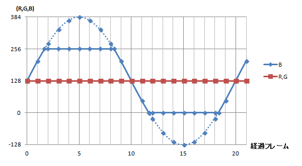
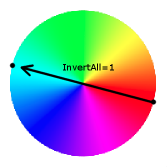

AIRファイルで設定されている、実行者のClsn1(攻撃判定：赤い四角)が相手のClsn2(やられ判定：青い四角)に重なった時の処理を設定。設定された各種パラメーターの条件が相手の状態を満たしていた場合にヒットし、くらいアニメ・ダメージ・ふっとび速度などの処理が実行されます。
HitDefの処理は、ステートを移動するかReversalDefが実行されるまで続きます。
そのステート中効果が持続しますが、1回ヒットしたキャラに対しては、効果を及ぼさなくなります。このため、複数ヒットする技の場合は、ヒットさせたい数だけHitDefを定義するか、複数回効果があるようにトリガーを設定する必要があります。
Clsn1がない、または実行者のMoveTypeがIだった場合、HitDefは機能しません。
HitDefの定義をもった攻撃判定へヒットするのがReversalDef。仕様上ReversalDefとは併用できません。
バージョンごとの変更点・バグ・エラー・仕様
| 内容 | |
|---|---|
| - | RoundState=3,RoundState=4ではパワーゲージが増減されません。※ただし、パラメーターは読み込まれます。 |
| Version1.0から | ヒット硬直(Pausetime)が1.0以降は自分側のみWinより1F増加しています。 |
| Version1.0から | MinDist,MaxDist,ForceNoFallが追加されました。 |
パラメーター
- Attr = ステートタイプ, 攻撃属性(技の強さと属性), 以降攻撃属性をカンマで複数記述可... (文字列, 文字列, )
-
攻撃がどんな攻撃なのかを指定します。
ステートタイプでは攻撃がどのような状態でだされているか指定します。攻撃属性ではどのくらいの強さでどんな攻撃なのかを指定します。
例えば、立った状態で何の変哲もないパンチをだしているのなら
Attr=S,NA、空中でスペシャルな飛び道具をだしているのならAttr=A,HPと記述します。また、複数の攻撃属性が指定可能でAttr=SA,NA,HPだとSNA(立ちの通常打撃)・SHP(立ちの超必殺飛び道具)・ANA(空中の通常打撃)・AHP(空中の超必殺飛び道具)の4つ状態を持っていることになります。ステートタイプ S 立ち C 屈み A 空中 技のランク N 通常 S 必殺 H 超必殺 A すべて 属性 A 打撃 T 投げ P 飛び道具 省略不可
- HitFlag = ヒットフラグ (文字列)
-
どういう状態(ステートタイプ)の敵に攻撃が命中するかを指定します。ヒットフラグは複数指定可能。
フラグ H 立ち(High)。 L 屈み(Low)。 M 立ち、屈み(Medium)。=HL A 空中(Air)。 F 落下(Fall)。 D ダウン(Down)。Fと組み合わせなければ機能しません。 P 飛び道具(Projectile)。 + 食らい状態の敵のみにヒット。 - 食らい状態の敵にはヒットしない。 省略時のデフォルト値： MAF ;ダウン状態にのみヒットしない
- GuardFlag = ガードフラグ (文字列)
-
敵がどういう状態ならガードできるかフラグを指定します。フラグは複数指定可能。
フラグ H 立ち(High)。 L 屈み(Low)。 M 立ち、屈み(Medium)。=HL A 空中(Air)。 省略時のデフォルト値： ;空文字列=ガード不可
- AffectTeam = 影響チーム (文字列)
-
チームモード時、どのチームに攻撃が影響するかフラグを指定します。
フラグ B 敵味方かまわず E 敵のみ F 味方のみ 省略時のデフォルト値： E
- AnimType = アニメタイプ (文字列)
-
相手のリアクションアニメの種類を指定します。ただし、「up」と「diagup」はオプションで、相手が絵を用意してない場合は、「Back」と同じ結果になります。
文字列 状態 L 弱 (Lightの略) M 中 (Mediumの略) H 強 (Hardの略) B ふっとび (Backの略) U 真上ふっとび (UPの略) D 斜めふっとび (DiagUpの略) 省略時のデフォルト値： Light
- Air.AnimType = 空中でのアニメタイプ (文字列)
-
空中でのアニメタイプを指定。
省略時のデフォルト値： ;AnimTypeと同じ
- Fall.AnimType = Fall状態時のアニメタイプ (文字列)
-
空中でのアニメタイプFall状態のときのアニメタイプです。
※Fall状態・・・Fall=1。HitTimeを過ぎても、受身を取らない限り空中復帰できず、着地すると落下ダウンする状態。これに対し、Fall=0の場合、空中で立ち直り、HitTimeを過ぎると操作可能となる。また、HitTime中でも、着地すると通常のジャンプ着地となる。なお、一度Fall=1になると、Fall=0の攻撃を受けてもFall=1のままとなる。
省略時のデフォルト値： ;Air.AnimTypeがUpならUp、それ以外はBack
- Ground.Type = 地上でののけぞり方 (文字列)
-
相手の地上でののけぞり方を文字列で指定します。
文字列 状態 H 上のけぞり (Highの略) L 下のけぞり (Lowの略) T 転倒 (Tripの略) N なし、使用は非推奨 (Nonの略) 省略時のデフォルト値： High
- Air.Type = 空中でののけぞり方 (文字列)
-
相手の空中でののけぞり方を文字列で指定します。設定方法はGround.Typeと同じ。
省略時のデフォルト値： ;Ground.Typeと同じ
- ID = ヒットid番号 (整数)
-
識別用のIDをつけることができます。後述と組み合わせることにより、特定の技からは繋がらなかったりするようにできます。
また、Target系のステコン、トリガーが参照するID(HitID)は、このIDの攻撃によりターゲットとなった敵を示します。
省略時のデフォルト値： 0
- ChainID = 連続ヒットid番号 (整数)
-
ここで指定したIDからのみ、攻撃が繋がるようになります。
省略時のデフォルト値： -1 ;すべての攻撃が繋がります。
- NoChainID = 不連続ヒットid番号1, 不連続ヒットid番号2 (整数, 整数)
-
ここで指定したIDからは攻撃が繋がらなくなります。2つまで指定可。ガード時も繋がらなくなります。(攻撃がすり抜ける)
省略時のデフォルト値： -1 ;すべての攻撃が繋がります。
- Kill = KOフラグ (整数)
-
0にすると、その攻撃で相手をKOできなくなります。
最後の一撃でのみKOしたい多段攻撃などに。
省略時のデフォルト値： 1
- Guard.Kill = ガードKOフラグ (整数)
-
0にすると、ガード時のダメージで相手をKOできなくなります。
省略時のデフォルト値： 1
- Fall.Kill = - (整数)
-
0にすると、落下ダウン時のダメージで相手をKOできなくなります。
省略時のデフォルト値： 1
- HitOnce = 1回ヒットフラグ (0か1)
-
1にした場合、複数の敵がいても、1方にしかヒットしなくなります。attrがT(投げ)の場合、1になります。
省略時のデフォルト値： 0 ;ただし、AttrでTを指定していると1に変更されます。
- Air.Juggle = ジャグルポイント (整数)
-
Fall状態の敵に対する連続技に必要なポイント数を上乗せします。StateDefの"juggle"パラメータと混同しないようにしましょう。
projectile専用のパラメータと思ってよいらしいです。
省略時のデフォルト値： 0
- Damage = ヒットダメージ, ガードダメージ (整数, 整数)
-
ヒット、ガード時のダメージを整数で指定します。
省略時のデフォルト値： 0, 0
- GetPower = p1ヒットゲージ増加量, p1ガードゲージ増加量 (整数, 整数)
-
攻撃がヒットした、ガードされたときに増えるゲージ量です。
省略時のデフォルト値： (mugen.cfgのDefault.Attack.LifeToPowerMul)×Damage, mugen.cfgのDefault.Attack.LifeToPowerMul)×Damage÷2
- GivePower = p2ヒットゲージ増加量, p2ガードゲージ増加量 (整数, 整数)
-
攻撃がヒットした、ガードされたときに増える相手のゲージ量です。
省略時のデフォルト値： (mugen.cfgのDefault.GetHit.LifeToPowerMul)×Damage, (mugen.cfgのDefault.GetHit.LifeToPowerMul)×Damage÷2
- PauseTime = p1停止時間, p2ブルブル時間 (整数, 整数)
-
ヒット時の自分と相手の停止時間を整数で指定します。停止時間中、相手はブルブル揺れます(HitShake状態)。
省略時のデフォルト値： 0, 0
- NumHits = ヒットカウント数 (整数)
-
コンボカウンターに加算されるヒット数です。
省略時のデフォルト値： 1
- HitSound = グループ番号, アイテム番号 (整数, 整数)
-
ヒット音をcommon.sndから指定します。5,0(弱ヒット音)～5,4(大打撃音)から選ぶことになります。自分のsndファイルから指定したい場合は、"hitsound = S1,0"のように、先頭にSを記述します。
省略時のデフォルト値： ?, ? ;多分、MUGENのデフォルト音声に設定される。
- GuardSound = グループ番号, アイテム番号 (整数, 整数)
-
ガード音をcommon.sndから指定します。といっても、用意されているのは6,0のみ。自分のsndファイルから指定したい場合は、先頭にSを記述します。
省略時のデフォルト値： ?, ? ;多分、MUGENのデフォルト音声に設定される。
- Priority = ヒット優先度, 相打ちの挙動 (整数, 文字列)
-
攻撃の優先度で1から7、相打ち時の挙動を「Hit」「Dodge」「Miss」の内から指定します。
実行者の攻撃と相手の攻撃が同時に発生した場合、数値の高い方のみヒットします。ヒット優先度が同じ場合、「Hit」「Miss」「Dodge」により以下のようになります。
文字列 状態 H 攻撃がヒットする (Hitの略) M 自分の攻撃は当たらない (Missの略) D 相手が「Hit」でも両者空振り (Dodgeの略) 省略時のデフォルト値： 4, H
- P1StateNo = ヒット時移行するステート番号 (整数)
-
攻撃がヒットした場合に移行するステートの番号を指定します。主に投げ技で使用。
省略時のデフォルト値： -1
- P2StateNo = ヒット時相手に参照させるステート番号 (整数)
-
攻撃がヒットした場合に、相手に参照させるステートの番号を指定します。これを指定した場合、HitOverrideを仕込んだ相手(Helper等)に攻撃が当たらなくなります。
P2StateNo=-1とすると、P2GetP1State=1の効果のみになる。（P2GetP1State=0が指定されている場合はP2GetP1Stateが優先されるためP2GetP1State=0となる。）なお、この際に5000番台に移動するのはGround.Type、Air.TypeがNormal(頭文字がN）以外の場合である。
投げに使ってもProjectile等と相打ちした時に致命的な不具合が生じることがあるので、できれば全く使わない方が良いです。
といいたいところですが、代わりに使うことになるTargetStateも扱いが難しいので、不具合を承知で使うのも止むを得ないかもしれません。
省略時のデフォルト値： -1 ;無効
- P2GetP1State = ステート奪取フラグ (整数)
-
0の時はP2StateNoを指定していても対象者のステートを奪わず、対象者自身のステートを読みこませる。1の時は相手のステートを奪います。
省略時のデフォルト値： ;相手に実行者の食らいステートを読み込ませる。
- P1SprPriority = (整数)
-
攻撃が接触した場合のスプライトの表示優先度を指定します。1だと相手の手前、-1だと奥に表示されます。
省略時のデフォルト値： 1
- P2SprPriority = (整数)
-
省略時のデフォルト値：
- ; SprPriority = スプライト表示優先度 (整数)
-
省略時のデフォルト値：
- ForceStand = 強制立たせフラグ (整数)
-
1にすると、しゃがんだ相手にヒットしても立ち食らいポーズをとらせます。
省略時のデフォルト値： Ground.VelocityのY速度が0なら0、0以外1。
- ForceNoFall = (整数)
-
fall状態強制解除
省略時のデフォルト値：
- Fall = 落下フラグ (整数)
-
通常、相手を浮かせるような攻撃でも、HitTimeが終了すれば、相手は立ち直り、着地しますが、Fall = 1にした場合、相手は自動では立ち直らず、受身操作（x+y）をしなければダウンします
省略時のデフォルト値：
- Fall.Damage = damage_amt (整数)
-
落下状態のままダウンした場合に与えるダメージを指定します。
省略時のデフォルト値： 0
- Fall.XVelocity = 落下バウンド水平速度 (浮動小数点数)
-
落下状態のままダウンした場合の、バウンド水平速度を変更する場合、指定します。
省略時のデフォルト値： ;速度変更なし
- Fall.YVelocity = 落下バウンド垂直速度 (浮動小数点数)
-
落下状態のままダウンした場合の、バウンド垂直速度を指定します。
省略時のデフォルト値： -4.5
- Fall.Recover = 受身可能フラグ (整数)
-
0にすると相手が落下状態でも受身（x+y）をとれなくなります。
省略時のデフォルト値： 1 ;受身可能
- Fall.RecoverTime = 受身可能受付開始時間 (整数)
-
落下状態になってから受身が取れるようになるまでの時間を指定します。pausetimeは含まれません。Fall.Recover = 0にした場合は無効。
追撃できることを想定している技の場合、大きな値を設定するか、Fall.Recover=0にするとよいでしょう。
省略時のデフォルト値： 4
- SparkNo = ヒットスパークのアクション番号 (整数)
-
ヒットスパークのアクション番号をfightfx.airから指定します。自分のairファイルから指定したい場合は、"sparkno = S2000,0"のように、先頭にSを記述します。
省略時のデフォルト値： ;cnsで設定した値が使用されます。
- Guard.SparkNo = ガードスパークのアクション番号 (整数)
-
ガードスパークのアクション番号をfightfx.airから指定します。自分のairファイルから指定したい場合は、"Guard.sparkno = S2010,0"のように、先頭にSを記述します。
省略時のデフォルト値： ;cnsで設定した値が使用されます。
- SparkXY = スパークx座標, スパークy座標 (整数, 整数)
-
ヒット、ガードスパークの表示位置を指定します。
省略時のデフォルト値： 0, 0
- P1Facing = p1の向き (整数)
-
-1にすると、攻撃がヒットした場合に後ろを向きます。主に投げ技で使用。
省略時のデフォルト値： ;向きを変更しない
- P1GetP2Facing = p1の向き (整数)
-
1にすると、攻撃がヒットした場合に相手と同じ方向を、-1で逆を向きます。p1facingより優先されます。
省略時のデフォルト値： 0 ;向きを変えない
- Snap = x固定座標, y固定座標 (整数, 整数)
-
ヒットした相手を固定する位置を、P1を基準として指定します。
このパラメータも、通常、使用しません。投げ等で相手を指定位置に固定する場合は、TargetBindを使用します。
省略時のデフォルト値：
- ; MinDist = x最小座標, y最小座標 (整数, 整数)
-
攻撃がヒットしている間の、P2の移動範囲をP1の位置を基準として指定できます。
省略時のデフォルト値：
- ; MaxDist = x最大座標, y最大座標 (整数, 整数)
-
攻撃がヒットしている間の、P2の移動範囲をP1の位置を基準として指定できます。
省略時のデフォルト値：
- P2Facing = p2の向き (整数)
-
1にすると、攻撃がヒットした場合、相手に正面を向かせます。-1にすると後ろを向かせます。
省略時のデフォルト値： ;向きを変更しない
- Ground.HitTime = ヒット時間 (整数)
-
相手が攻撃を受けて行動不能になる時間です。長くするほど連続攻撃が繋がりやすくなります。永久コンボが発生しないように、気をつけて設定しましょう。
相手が地上にいる間のみ有効です。
省略時のデフォルト値： 0
- Ground.SlideTime = ヒットバック時間 (整数)
-
相手が攻撃を受けて後ずさる時間です。この時間が経過すると、ブレーキがかかります。ただし、やられステートのphysicsがSやCになっているため、ヒットバックは摩擦によっても停止します。よって、よろけやられのような、ゆっくりとしたヒットバックは、HitDefでは再現できません。ナニソレ。
省略すると、強烈なブレーキがかかってしまうので、省略しないほうがいいです。
省略時のデフォルト値： 0
- Ground.Velocity = ヒット速度X, ヒット速度Y (浮動小数点数, 浮動小数点数)
-
相手が地上で攻撃を受けて移動する速度です。yに負数を指定すると、宙に浮きます。
地上にいる場合、摩擦の影響を受けます。
省略時のデフォルト値： 0, 0
- Ground.CornerPush.VelOff = 地上コーナープッシュ速度 (浮動小数点数)
-
画面端で地上の相手に攻撃を加えたときに、押し戻される速度を指定します。値が大きくなるほど、画面端から遠くに押し戻されます。
相手の移動距離とは無関係で、相手のshaketimeではなく、自分のpausetimeが0になった瞬間に速度がかかります。
省略時のデフォルト値： ;AttrがAの場合は0、それ以外の場合は(1.3 × Guard.Velocity)となります。
- Air.HitTime = 空中でのヒット時間 (整数)
-
相手が空中で攻撃を受けて行動不能になる時間です。この時間を過ぎると、相手はコントロールを取り戻します。ちなみに、このときのグラフィックはairにのみ依存するため、見た目が立ち直っていても、時間内なら行動不能(5035番のアニメが短いとき起きる現象)ですし、時間が経過していれば、見た目がのけぞり中でも行動可能(5035番のアニメが長いとき起きる現象)です。省略時は20。つまり、この値に合わせてair(5035番)を設定する必要があります。Fallパラメータが1の場合、このパラメータは無効になります。
省略時のデフォルト値： 20
- Air.Fall = value (整数)
-
空中ヒットしたときのみ落下状態にしたい場合は1にします。Fall = 1だと地上やられでも落下状態になります。
省略時のデフォルト値： ;Fallと同値
- Air.Velocity = 空中ヒット速度X, 空中ヒット速度Y (浮動小数点数, 浮動小数点数)
-
相手が空中で攻撃を受けたとき移動する速度です。
省略時のデフォルト値： 0, 0
- Air.CornerPush.VelOff = 空中コーナープッシュ速度 (浮動小数点数)
-
画面端で空中の相手に攻撃を加えたときに、押し戻される速度を指定します。値が大きくなるほど、画面端から遠くに押し戻されます。
省略時のデフォルト値： ;Ground.CornerPush.VelOffと同値
- Down.Bounce = ダウン追い討ちヒットバウンドフラグ (整数)
-
1にすると、ダウン追い討ちヒット時、Fall.XVelocityとFall.YVelocityでバウンドします。Down.Velocityの垂直速度が0の時のみ有効。
省略時のデフォルト値： 0 ;バウンドしない。
- Down.HitTime = ダウン追い討ちヒット時間 (整数)
-
ダウン状態の敵に攻撃が当たったとき、スライドする時間です。Down.Velocityの垂直速度が0の時のみ有効。
省略時のデフォルト値：
- Down.Velocity = ダウン追い討ち水平速度, ダウン追い討ち垂直速度 (浮動小数点数, 浮動小数点数)
-
ダウン追い討ちヒット時ののけぞり速度を指定します。垂直方向の速度が0以外の場合、相手は宙に浮きます。0の場合はスライドします。
省略時のデフォルト値： ;Air.Velocityと同値
- Down.CornerPush.VelOff = ダウンコーナープッシュ速度 (浮動小数点数)
-
画面端でダウン状態の相手に攻撃を加えたときに、押し戻される速度を指定します。値が大きくなるほど、画面端から遠くに押し戻されます。
省略時のデフォルト値： ;Ground.CornerPush.VelOffと同値
- Guard.Velocity = ガード速度X (浮動小数点数)
-
相手が地上で攻撃をガードしたとき移動する速度です。垂直方向は指定不可。
省略時のデフォルト値： ;Ground.Velocityと同値。
- Guard.HitTime = ガード時間 (整数)
-
相手が攻撃をガードしてから自動的に(キーを後ろに入力しなくても)ガードモーションをとり続ける時間。行動不能時間ではないので注意。
DOS版実際にゲームに反映されるのは、指定値の半分になります。「ガードされると凄く不利」というのがDOSの仕様です。DOSでの使用を想定している場合は、ちゃんと設定したほうがよいでしょう。WIN版では、指定値がそのまま適応されます。
省略時のデフォルト値： ;Ground.HitTimeと同値になりますが、前述の仕様により、実際のガード時間はGround.HitTimeの半分となり、硬直は、Guard.CtrlTime(省略時Guard.SlideTime)か「Ground.HitTimeの半分」のどちらか低い方、ということにになります。
- Guard.SlideTime = ガードバック時間 (整数)
-
Ground.SlideTimeのガード版。省略時はGuard.HitTimeと同値になります。
省略時のデフォルト値：
- Guard.CtrlTime = ガードからの復帰時間 (整数)
-
相手が攻撃をガードしてからコントロールを取り戻すまでの時間。ただし、どんなに大きな値にしてもGuard.HitTimeが過ぎれば相手はコントロールを取り戻します。
省略時は、なぜかGuard.SlideTimeと同値。ちゃんと設定した方がよいパラメータです。
省略時のデフォルト値：
- Guard.Dist = ガード認識距離 (整数)
-
相手がガード操作を行うことでガードポーズを取るようになる距離をピクセルで指定します。省略時は、cns冒頭で設定した値と同じになります。
基本的に、使用されることのないパラメータです。
省略時のデフォルト値：
- Guard.PauseTime = p1停止時間, p2ブルブル時間 (整数, 整数)
-
ガード時の自分と相手の停止時間を整数で指定します。停止時間中、相手はブルブル揺れます(HitShake状態)。省略した場合、pausetimeと同じになります。
省略時のデフォルト値：
- Guard.CornerPush.VelOff = 地上ガードコーナープッシュ速度 (浮動小数点数)
-
画面端で地上の相手に攻撃をガードされた時に、押し戻される速度を指定します。値が大きくなるほど、画面端から遠くに押し戻されます。
省略時は、Ground.CornerPush.VelOffと同値になります。
省略時のデフォルト値：
- AirGuard.Velocity = 空中ガード速度X, 空中ガード速度Y (浮動小数点数)
-
相手が空中で攻撃をガードしたとき移動する速度です。省略時は、Air.Velocityの空中ヒット速度X * 1.5, 空中ヒット速度Y / 2。
省略時のデフォルト値：
- AirGuard.CtrlTime = 空中ガード復帰時間 (整数)
-
相手が空中で攻撃をガードしてからコントロールを取り戻すまでの時間。省略時はGuard.CtrlTimeと同値。
省略時のデフォルト値：
- AirGuard.CornerPush.VelOff = 地上ガードコーナープッシュ速度空中 (浮動小数点数)
-
画面端で空中の相手に攻撃をガードされた時に、押し戻される速度を指定します。値が大きくなるほど、画面端から遠くに押し戻されます。
省略時は、Ground.CornerPush.VelOffと同値になります。
省略時のデフォルト値：
- YAccel = 重力 (浮動小数点数)
-
攻撃がヒットした相手の重力を指定します。
省略時のデフォルト値： .35 ;解像度で値が変化、240p:.35, 480p:.7, 720p:1.4.関連するトリガー：GetHitVar(YAccel)
- PalFX.Time = 持続時間 (整数)
-
効果の持続時間をフレーム単位で指定します。
ステートが変わっても有効なので、パレット変更中にやられステートに移行しても効果は持続します。この現象を回避したければ、
Time=1にして、トリガーで時間を調整します。ただし、その場合SinAddは機能しません。または、効果を終わらせたい時に別のAllPalFXでTime=1をだけを指定して値を上書きします。ただし、この場合相手プレイヤーのAllPalFXも消してしまいます。-1で表示を永続化。0では表示されず、1以上か-1を指定しなければなりません。
※60フレーム=1秒
最小値: -1 , 最大値: 2147483647省略時のデフォルト値： 0
- PalFX.Color = 彩度 (整数)
-
パレットの彩度を下げます。
例: 彩度を低くした時、明るい色ほど白・暗い色ほど黒に近づきます。
0← →256最小値: 0 ;グレースケール , 最大値: 256 ;変化なし省略時のデフォルト値： 256
- PalFX.Add = 加算する赤色, 加算する緑色, 加算する青色 (整数, 整数, 整数)
-
指定した色をパレットに加算します。
暗い色ほど指定色に近づき、色の合計値が大きくなるほど、色が明るくなります。
例:
Add=256,0,0の場合、 黒(0,0,0)は 赤(256,0,0)になりますが、 白(256,256,256)は 白(256,256,256)のままです。最小値: -256, -256, -256 ;黒 , 最大値: 256, 256, 256 ;白省略時のデフォルト値： 0, 0, 0
- PalFX.Mul = 合成する赤色, 合成する緑色, 合成する青色 (整数, 整数, 整数)
-
基本色(パレット+Add+SinAddの合計値)に合成色(Mulで指定した値)/256を乗算します。
合成色の値が小さくなるほど、色が暗くなります。明るい色ほど合成色に近づきます。
例:
Add=64,256,64,Mul=1,256,1の場合、 白(256,256,256)は 緑(1,256,1)になりますが、 黒(0,0,0)は 黒(0,0,0)のままです。最小値: 1, 1, 1 , 最大値: 256, 256, 256 ;変化なし省略時のデフォルト値： 256, 256, 256
- PalFX.SinAdd = 周期する赤色, 周期する緑色, 周期する青色, 周期 (整数, 整数, 整数, 整数)
-
指定色を、指定周期(単位はフレーム)の正弦波でパレットに加算/減算。
周期が大きいほどゆるやかに色が変化します。
例:
SinAdd=0,0,256,20,Add=0,0,0,Mul=256,256,256の場合、 (128,128,128)は、5F後 (128,128,256)になり、10F後 (128,128,128)に戻り、15F後 (128,128,0)、20F後 (128,128,128)に戻る、という周期を繰り返します。最小値: , , , , 最大値: , , ,省略時のデフォルト値： 0, 0, 0, 0
- PalFX.InvertAll = 色反転フラグ (0か1)
-
色を反転するか・しないかのフラグです。
例: (0,0,0)→ (256,256,256), (0,252,0)→ (256,4,256), (256,0,0)→ (0,256,256)
最小値: 0 ;色が反転しない , 最大値: 1 ;色が反転する省略時のデフォルト値： 0
- EnvShake.Time = ヒット時画面振動時間 (整数)
-
揺れの持続時間を指定。
省略時のデフォルト値：
- EnvShake.Ampl = 揺れ幅 (整数)
-
揺れ幅をピクセル寸法で指定。負数を指定すると、最初、下方向に揺れます。省略時-4。
省略時のデフォルト値：
- EnvShake.Phase = 位相 (浮動小数点数)
-
位相を指定。省略時0。但し、振動数の乗数が90以上のときは、省略時90。よくわかりません。
省略時のデフォルト値：
- EnvShake.Freq = 揺れの速度 (浮動小数点数)
-
揺れるスピードを、0(低速)～180(高速)の間で指定。省略時60。
省略時のデフォルト値：
- Fall.EnvShake.Time = 落下時画面振動時間 (整数)
-
相手の落下ダウン時に画面を揺らしたい時間を指定。
省略時のデフォルト値：
- Fall.EnvShake.Ampl = 振幅 (浮動小数点数)
-
揺れ幅をピクセル寸法で指定。負数を指定すると、最初、下方向に揺れます。省略時-4。
省略時のデフォルト値：
- Fall.EnvShake.Phase = 位相 (整数)
-
位相を指定。省略時0。但し、振動数の乗数が90以上のときは、省略時90。よくわかりません。
省略時のデフォルト値：
- Fall.EnvShake.Freq = 振動数 (浮動小数点数)
-
揺れるスピードを、0(低速)～180(高速)の間で指定。省略時60。
省略時のデフォルト値：
- Attack.Width = z1, z2 (整数, 整数)
-
現在、使われておりません。
省略時のデフォルト値：
- Persistent = HitPause無視時間 (整数)
-
Persistentの値をNに設定した場合、設定したステートコントローラーはNフレーム後にもう一度実行されます。0の場合、トリガーが成立しても1回しかステートコントローラーが実行されません。※トリガーは読み込みますが、パラメーターは完全に無視されます。Persistentが管理されている配列が初期化される条件は、ステート処理開始(ChangeState,SelfState,TagOut,TagInなどでステート移動)でTime=0の場合に実行されます。また、初期化される個数が決まっており、10個のPersistentしか初期化されません。ですので、Persistentの多様やChangeStateでの使用は避けましょう。もし、特定のステートが実行されない場合は、この仕様を疑ったほうがいいかもしれません。その他にも、
var,fvar,sysvar変数は利用できない・常時ステート([StateDef -1],[StateDef -2],[StateDef -3])では、常にPersistent=1の状態・IgnoreHitPause=1が設定されていた場合、アドレスを書き換え(Alive偽装・Persistent偽装？など)・バージョンによる動作の違いなどバグが満載です。結論、
Persistentの値が0以外の場合は省略して、TriggerでTimeやvarを使って管理した方がいいです。最小値: 0 , 最大値: 128省略時のデフォルト値： 1
- IgnoreHitPause = HitPauseを無視フラグ (0か1)
-
IgnoreHitPauseの記述されたステートコントローラー処理がHitPause(ヒット停止時間)を無視して実行されます。基本的に1に設定しておくべきパラメーター。パラメーター自身に
var,fvar,sysvar変数は利用できません。攻撃を当てたり受けたりした時に
VarSetしたり、Explodの演出をずれないようにしたり用途はさまざま。最小値: 0 , 最大値: 1省略時のデフォルト値： 0
省略した時のデフォルト値
- [State ,HitDef]
- Type = HitDef
- Trigger1 = 1
- Attr = ?, ?
- HitFlag = MAF ;ダウン状態にのみヒットしない
- GuardFlag = ;空文字列=ガード不可
- AffectTeam = E
- AnimType = Light
- Air.AnimType = ;AnimTypeと同じ
- Fall.AnimType = ;Air.AnimTypeがUpならUp、それ以外はBack
- Ground.Type = High
- Air.Type = ;Ground.Typeと同じ
- ID = 0
- ChainID = -1 ;すべての攻撃が繋がります。
- NoChainID = -1 ;すべての攻撃が繋がります。
- Kill = 1
- Guard.Kill = 1
- Fall.Kill = 1
- HitOnce = 0 ;ただし、
AttrでTを指定していると1に変更されます。 - Air.Juggle = 0
- Damage = 0, 0
- GetPower = (mugen.cfgのDefault.Attack.LifeToPowerMul)×Damage, mugen.cfgのDefault.Attack.LifeToPowerMul)×Damage÷2
- GivePower = (mugen.cfgのDefault.GetHit.LifeToPowerMul)×Damage, (mugen.cfgのDefault.GetHit.LifeToPowerMul)×Damage÷2
- PauseTime = 0, 0
- NumHits = 1
- HitSound = ?, ? ;多分、MUGENのデフォルト音声に設定される。
- GuardSound = ?, ? ;多分、MUGENのデフォルト音声に設定される。
- Priority = 4, H
- P1StateNo = -1
- P2StateNo = -1 ;無効
- P2GetP1State = ;相手に実行者の食らいステートを読み込ませる。
- P1SprPriority = 1
- P2SprPriority =
- ; SprPriority =
- ForceStand = Ground.VelocityのY速度が0なら0、0以外1。
- ForceNoFall =
- Fall =
- Fall.Damage = 0
- Fall.XVelocity = ;速度変更なし
- Fall.YVelocity = -4.5
- Fall.Recover = 1 ;受身可能
- Fall.RecoverTime = 4
- SparkNo = ;cnsで設定した値が使用されます。
- Guard.SparkNo = ;cnsで設定した値が使用されます。
- SparkXY = 0, 0
- P1Facing = ;向きを変更しない
- P1GetP2Facing = 0 ;向きを変えない
- Snap =
- ; MinDist =
- ; MaxDist =
- P2Facing = ;向きを変更しない
- Ground.HitTime = 0
- Ground.SlideTime = 0
- Ground.Velocity = 0, 0
- Ground.CornerPush.VelOff = ;AttrがAの場合は0、それ以外の場合は(1.3 × Guard.Velocity)となります。
- Air.HitTime = 20
- Air.Fall = ;Fallと同値
- Air.Velocity = 0, 0
- Air.CornerPush.VelOff = ;Ground.CornerPush.VelOffと同値
- Down.Bounce = 0 ;バウンドしない。
- Down.HitTime =
- Down.Velocity = ;Air.Velocityと同値
- Down.CornerPush.VelOff = ;Ground.CornerPush.VelOffと同値
- Guard.Velocity = ;Ground.Velocityと同値。
- Guard.HitTime = ;Ground.HitTimeと同値になりますが、前述の仕様により、実際のガード時間はGround.HitTimeの半分となり、硬直は、Guard.CtrlTime(省略時Guard.SlideTime)か「Ground.HitTimeの半分」のどちらか低い方、ということにになります。
- Guard.SlideTime =
- Guard.CtrlTime =
- Guard.Dist =
- Guard.PauseTime =
- Guard.CornerPush.VelOff =
- AirGuard.Velocity =
- AirGuard.CtrlTime =
- AirGuard.CornerPush.VelOff =
- YAccel = .35 ;解像度で値が変化、240p:.35, 480p:.7, 720p:1.4.
- PalFX.Time = 0
- PalFX.Color = 256
- PalFX.Add = 0, 0, 0
- PalFX.Mul = 256, 256, 256
- PalFX.SinAdd = 0, 0, 0, 0
- PalFX.InvertAll = 0
- EnvShake.Time =
- EnvShake.Ampl =
- EnvShake.Phase =
- EnvShake.Freq =
- Fall.EnvShake.Time =
- Fall.EnvShake.Ampl =
- Fall.EnvShake.Phase =
- Fall.EnvShake.Freq =
- Attack.Width =
- Persistent = 1
- IgnoreHitPause = 0
パラメーターの読み込み順
Attr(?) => HitFlag(?) => GuardFlag(?) => AffectTeam(?) => AnimType(?) => Air.AnimType(?) => Fall.AnimType(?) => Ground.Type(?) => Air.Type(?) => ID(1) => ChainID(2) => NoChainID(3, 4) => Kill(5) => Guard.Kill(6) => Fall.Kill(7) => HitOnce(8) => Air.Juggle(9) => Damage(10, 11) => GetPower(12, 13) => GivePower(14, 15) => PauseTime(17, 16) => NumHits(18) => HitSound(19, 20) => GuardSound(21, 22) => Priority(23, ?) => P1StateNo(24) => P2StateNo(25) => P2GetP1State(26) => P1SprPriority(27) => P2SprPriority(28) => ; SprPriority(27 -> 28) => ForceStand(29) => ForceNoFall(30) => Fall(31) => Fall.Damage(32) => Fall.XVelocity(33) => Fall.YVelocity(34) => Fall.Recover(35) => Fall.RecoverTime(36) => SparkNo(37) => Guard.SparkNo(38) => SparkXY(39, 40) => P1Facing(41) => P1GetP2Facing(42) => Snap(43 -> 45, 44 -> 46) => ; MinDist(43, 44) => ; MaxDist(45, 46) => P2Facing(47) => Ground.HitTime(48) => Ground.SlideTime(49) => Ground.Velocity(50, 51) => Ground.CornerPush.VelOff(52) => Air.HitTime(53) => Air.Fall(54) => Air.Velocity(55, 56) => Air.CornerPush.VelOff(57) => Down.Bounce(58) => Down.HitTime(59) => Down.Velocity(60, 61) => Down.CornerPush.VelOff(62) => Guard.Velocity(63) => Guard.HitTime(64) => Guard.SlideTime(65) => Guard.CtrlTime(66) => Guard.Dist(67) => Guard.PauseTime(69, 68) => Guard.CornerPush.VelOff(70) => AirGuard.Velocity(71, 72) => AirGuard.CtrlTime(73) => AirGuard.CornerPush.VelOff(74) => YAccel(75) => PalFX.Time(76) => PalFX.Color(77) => PalFX.Add(78, 79, 80) => PalFX.Mul(81, 82, 83) => PalFX.SinAdd(84, 85, 86, (調査中・・・)) => PalFX.InvertAll(87) => EnvShake.Time(88) => EnvShake.Ampl(89) => EnvShake.Phase(90) => EnvShake.Freq(91) => Fall.EnvShake.Time(92) => Fall.EnvShake.Ampl(93) => Fall.EnvShake.Phase(94) => Fall.EnvShake.Freq(95) => Attack.Width(;不必要なんで未検証) => Persistent(?) => IgnoreHitPause(?) =>
*バージョンや実行環境,パラーメーターの指定の仕方によって、読み込まれる順番が変わる可能性があります。参考程度なものだと思ってください。